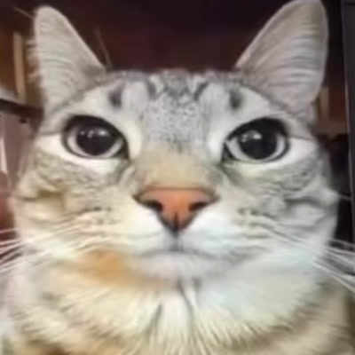

شغّل الكاميرا، وخلّ يدك واضحة قدامها.
الميم😐 عادي

بانتظار حركتك01 / 08
هنا تطلع حركتك
اسمح للكاميرا عشان تبدأ.
الكاميرا تشتغل على جهازك فقط، بدون تسجيل أو رفع الفيديو.
🫡
للتحية: افتح أصابعك وقرّبها من طرف الجبهة. وللخجل: قرّب السبابتين من بعض.